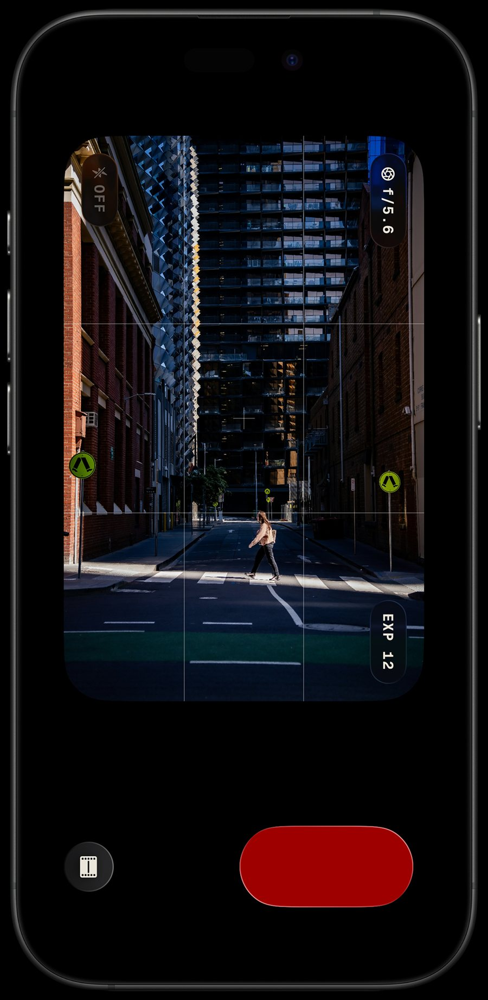
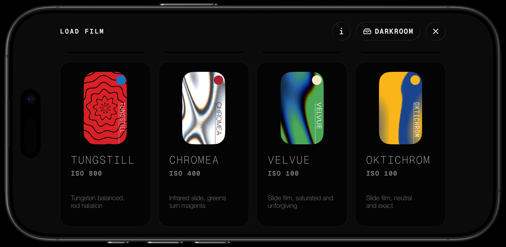
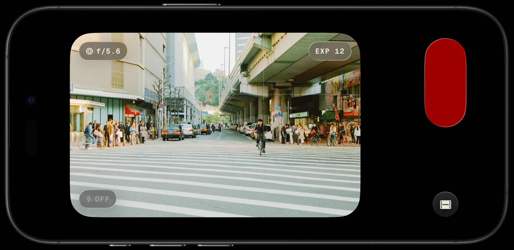

A frame you can't check is the one you think about before you take it.
Lupo is a film camera and a darkroom. Twelve exposures to a roll, and hours to wait before you see them.
Requires iOS 26

Twelve exposures
No burst. No retakes. No deleting the bad one and trying again.
A film camera
Every frame is exposed onto a modeled emulsion — the curve, the grain, and the way light scatters in the base — then developed and printed the way film is.

Eight emulsions
Warm and forgiving, or saturated and unforgiving. Black and white on a long tonal scale. Choose what the picture needs, before you take it.
Held like a camera
The interface never rotates to correct you. The controls stay where your hands left them, exactly as they would on film.

The darkroom
Shoot the roll, develop it, and wait. Lupo tells you when the frames are ready. The mystery is what makes it exciting — and the wait is the point.